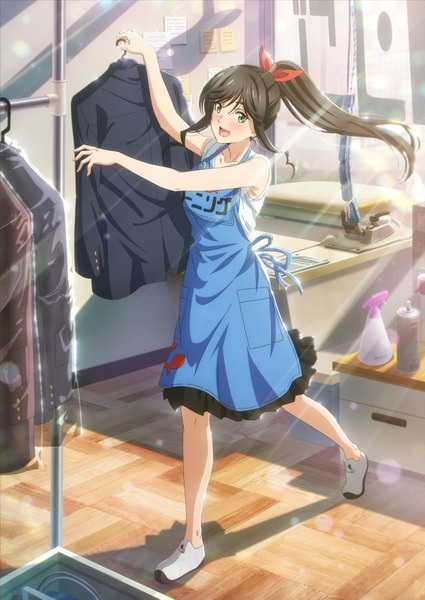
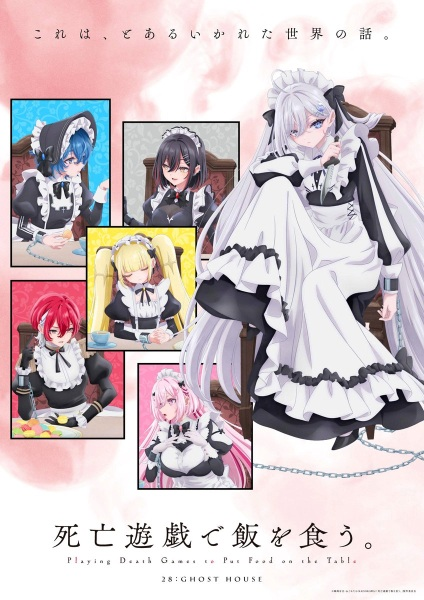
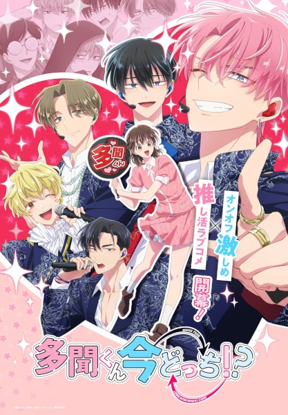
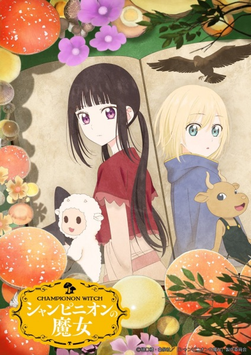
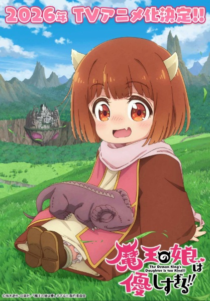
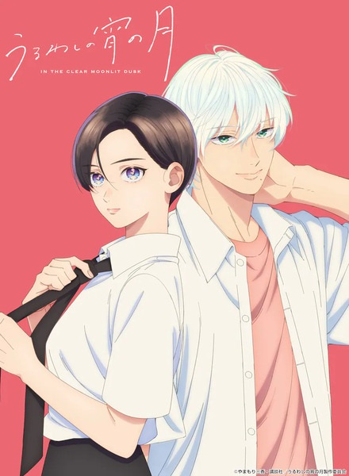
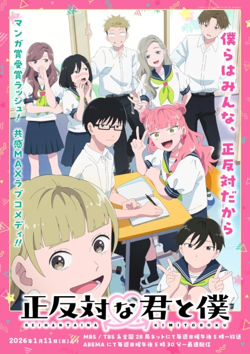
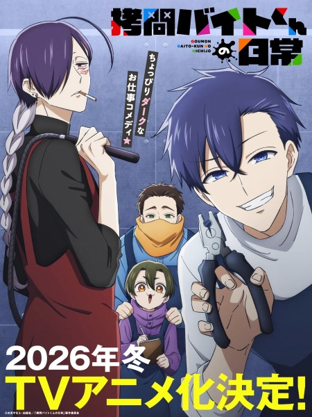
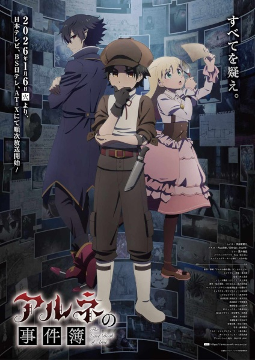
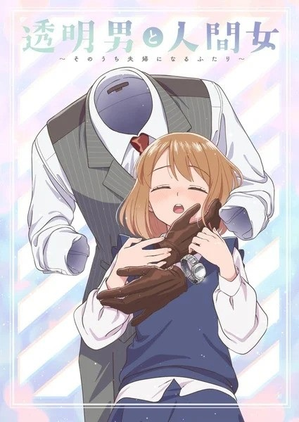

fuzzy's 2026 winter anime season primer
Dates are adjusted to CST
get the "Youtube No Translation" firefox add-on to automatically disable AI dubs in PVs
stuff i'm looking forward to
- Wash It All Away
- Airing: January 5th (Monday)
- PV: https://youtu.be/eVcuNh1OIEY
- Studio: Okuruto Noboru
- Why I'm looking forward to it: cute slice of life about a hard working girl!
- Does It Count if Your First Time Is With an Android?
- Airing: January 9th (Friday)
- PV: https://youtu.be/SQAHZWo7x28
- Studio: Nyan Pollution
- Why I'm looking forward to it: lots of yuri sex!!!
- Playing Death Games to Put Food on the Table
- Airing: January 7th (Wednesday)
- PV: https://youtu.be/rqp_JkzslnM
- Studio: Studio Deen
- Why I'm looking forward to it: lots of cute girls going through lots of terrible things. art and directing in the PV looks good!
- Journal with Witch
- Airing: January 4th (Sunday)
- PV: https://youtu.be/Cbm6m_WfmqI
- Studio: Shuka
- Why I'm looking forward to it: this feels like one of those really emotional anime movies. im really impressed by the PV.
- Tamon's B-Side
- Airing: January 3rd (Saturday)
- PV: https://youtu.be/WM3fJbNObSA, https://youtu.be/GIOzUu_oRec
- Studio: J.C. Staff
- Why I'm looking forward to it: to support... and to be supported... that is the relationship between an idol and an otaku....
- Kaya-chan isn't Scary
- Airing: January 11th (Sunday)
- PV: https://youtu.be/BGa9_xVMaEY, https://youtu.be/mDUkXvxI-kM
- Studio: East Fish Studio
- Why I'm looking forward to it: i want my wandering spirit to be exorcised by a kindergartener






stuff i'm skeptical of
- Champignon Witch
- Airing: January ??th ()
- PV: https://youtu.be/v3JunzVhGwQ
- Studio: Typhoon Graphics, Qzil.la
- Why I'm looking forward to it: honestly i think i'll watch anything if it has a witch in it
- The Demon King's Daughter Is Too Kind!!
- Airing: January 7th (Wednesday)
- PV: https://youtu.be/lT9Ae0FsQ20
- Studio: EMT Squared
- Why I'm looking forward to it: she's a cute little girl
- Scum of the Brave
- Airing: January 10th (Saturday)
- PV: https://youtu.be/rmhxBsx9yLw
- Studio: OLM
- Why I'm looking forward to it: cyber punk aesthetics and fantasy themes
- In the Clear Moonlit Dusk
- Airing: January 11th (Sunday)
- PV: https://youtu.be/FbDyiF8s1hk
- Studio: East Fish Studio
- Why I'm looking forward to it: i want to see a handsome girls blushing face
- You and I Are Polar Opposites
- Airing: January 11th (Sunday)
- PV: https://youtu.be/40f2xzb7N4U, https://youtu.be/VD7gCZicpoE
- Studio: Lapin Track
- Why I'm looking forward to it: it's really cute! admiring someone is such a wonderful thing!
- The Holy Grail of Eris
- Airing: January 8th (Thursday)
- PV: https://youtu.be/XmSYw13Ukfc
- Studio: Ashi Productions
- Why I'm looking forward to it: the most innocent girl in the world is framed. her only ally is the spirit of historys greatest villainess. it's like a buddy cop thing?
- The Daily Life of a Part-Time Torturer
- Airing: January 4th (Sunday)
- PV: https://youtu.be/adYllv555BE
- Studio: Diomedéa
- Why I'm looking forward to it: what a funny little concept
- The Case Book of Arne
- Airing: January 6th (Tuesday)
- PV: https://youtu.be/k36-zQohgzs, https://youtu.be/6zVNs7xRtg4
- Studio: SILVER LINK.
- Why I'm looking forward to it: a cute girl who loves vampires teams up with a vampire to solve a mystery
- The Invisible Man and His Soon-to-Be Wife
- Airing: January 8th (Thursday)
- PV: https://youtu.be/x_z8qrjh5t0
- Studio: Project No. 9
- Why I'm looking forward to it: invisible people are way too sexy...









sequels!
- 'Tis Time for "Torture," Princess Season 2
- Airing: January 12th (Monday)
- PV: https://youtu.be/cC-6G5daQBo
- Studio: PINE JAM
- Why I'm looking forward to it: HIMEGO SEASON 2!!!!!!!!!!!!!!!!! at last, tortura-san... we shall reunite...
- Frieren: Beyond Journey's End Season 2
- Airing: January 16th (Friday)
- PV: https://youtu.be/MwP4gqRys4c
- Studio: Madhouse
- Why I'm looking forward to it: hopefully they adapt the midas arc!
- Medalist 2nd Season
- Airing: January 24th (Saturday)
- PV: https://youtu.be/GTaqXo7scOY
- Studio: ENGI
- Why I'm looking forward to it: the worlds hardest working little girl returns